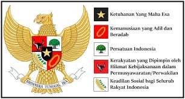

Penerapan Pancasila sebagai ideologi bangsa Indonesia sangat relevan jika dikaitkan dengan kerjasama bilateral, regional, dan multilateral. Nilai-nilai Pancasila, seperti Kemanusiaan yang Adil dan Beradab serta Persatuan Indonesia mendorong Indonesia untuk menjalin hubungan internasional yang berdasarkan prinsip kesetaraan, saling menghormati, dan kemanfaatan bersama. Dalam kerjasama bilateral, misalnya kerjasama Indonesia dengan Amerika Serikat melalui USAID. Semangat Pancasila terlihat dari usaha bersama untuk meningkatkan kesejahteraan masyarakat Papua melalui program penurunan angka stunting yang mencerminkan pengamalan nilai kemanusiaan.
.
Pada kerjasama regional, ASEAN Framework for Rural Development and Poverty Eradication (AFRDPE) menerapkan sila ketiga yaitu Persatuan Indonesia yang mencerminkan semangat persatuan dalam mengatasi tantangan kemiskinan di kawasan Asia Tenggara. Pancasila mengajarkan pentingnya solidaritas. Dalam forum seperti ASEAN, Indonesia turut berperan aktif melalui pemberdayaan desa wisata dan pelatihan ekonomi yang mendukung pembangunan pedesaan secara berkelanjutan. Hal ini dapat membuktikan bahwa Indonesia juga turut ikut mengimplementasikan Pancasila.
Pada kerjasama multilateral, sila kelima yaitu Keadilan Sosial bagi Seluruh Rakyat Indonesia menjadi pedoman bagi Indonesia untuk berpartisipasi dalam kerjasama global seperti dengan Perserikatan Bangsa-Bangsa (PBB) dan Bank Dunia. Dalam program multilateral ini, nilai keadilan sosial tercermin melalui upaya menciptakan kesempatan yang setara bagi masyarakat miskin di seluruh dunia termasuk di Indonesia agar dapat mendapatkan pendidikan, layanan kesehatan, dan pengembangan ekonomi yang berkelanjutan.
.
Sila kedua pancasila yaitu Kemanusiaan yang Adil dan Beradab juga diimplementasikan dalam kerjasama baik secara bilateral, regional, maupun multilateral. Dalam menjalankan kerjasama ini, Indonesia tidak hanya mengejar keuntungan negara tetapi juga memastikan bahwa program-programnya memberikan manfaat nyata bagi masyarakat dan individu. Hal ini terlihat dari peran aktif Indonesia dalam forum-forum multilateral yang bertujuan untuk menciptakan perdamaian, keadilan, dan kesejahteraan bersama. Dengan menjadikan Pancasila sebagai pedoman negara, Indonesia dapat menjalankan perannya secara aktif dalam kerjasama bilateral, regional, maupun multilateral khususnya dalam mencapai tujuan-tujuan SDGs yang bertujuan dalam memajukan kesejahteraan dunia.
.
